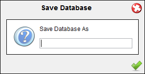

| Save Database |
|---|
|
 |
|
You can bring up the save database dialog by clicking on MySerieS-Save Database As... menu item. Then you type the database name. If the database exists you are prompted to ovewrite it. Note that you cannot ovewrite the current loaded database. |